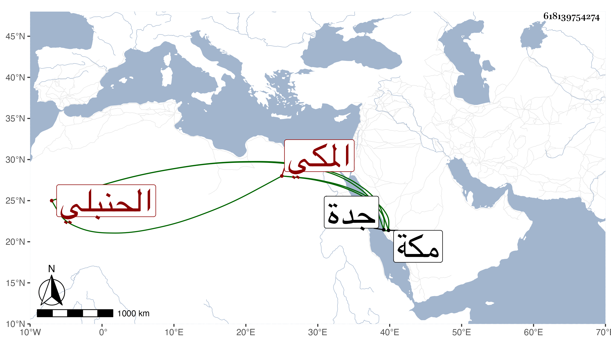

0902Sakhawi.DawLamic.ITO20230111-ara1.EIS1600.618139754274
Biography ID: 618139754274
11
أحمد بن عطية بن عبد الحي القيوم بن أبي بكر بن أبي ظهيرة المكي الحنبلي ابن أخي المحب قاضي جدة عرض علي قبل بلوغه أو معه في ربيع سنة ثلاث وتسعين محافيظه أربعي النووي ومختصر الخرقي والألفية في أفراد أحمد عن الثلاثة للعز محمد بن علي بن عبد الرحمن ومختصر البرهان بن مفلح في أصول الفقه وألفية ابن مالك والجرومية وتلخيص المفتاح بل وقرأ على من حفظه جميع الأربعين وسمع في البخاري ، وهو ذكي قوي الجنان والحافظة حل في كتابه الفقهي على العلاء ابن البهاء البغدادي حين مجاورته ويحضر عند قاضي مكة والكريمي الحنبليين وترجى له البراعة إن لزم الاشتغال وقد أجزت له .
